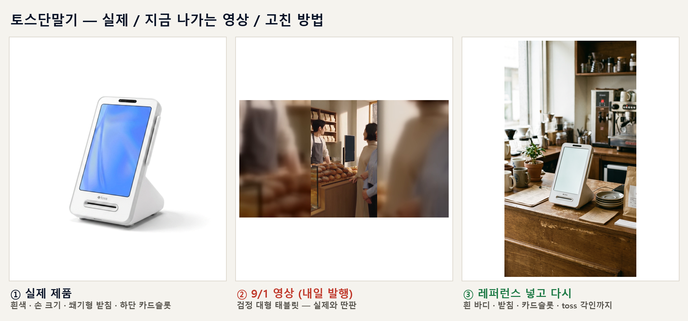
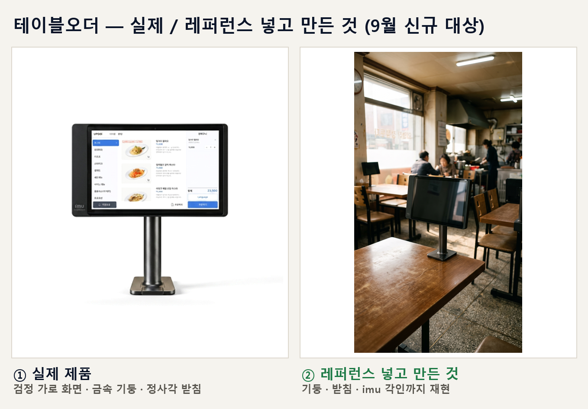

실물을 대조해 확인했습니다. 지적이 정확했습니다.

가운데가 내일(9/1) 나갈 영상입니다. 실제 토스단말기는 손에 들어오는 흰색인데, 영상에는 사람 상반신만 한 검정 태블릿이 나옵니다. 편의 주제가 「토스단말기」인데 정작 토스단말기가 화면에 없는 셈입니다.
오른쪽은 실제 제품 사진을 레퍼런스로 넣고 다시 만든 것입니다. 흰 바디·쐐기형 받침·하단 카드슬롯은 물론 toss 각인까지 재현됐습니다.

금속 기둥과 정사각 받침, 좌하단 imu 각인까지 나옵니다. 9월부터 테이블오더가 대상에 들어오므로 미리 확인해 두었습니다.
| 편 | 화면에 나온 것 | 판정 |
|---|---|---|
| 8/31 블루투스 | 흰색 세로 단말기 — 토스와 닮음 | 정상 손에 크게 들려 우연히 잘 나옴 |
| 9/1 토스키오스크 | 검정 대형 세로 태블릿 | 불일치 |
| 9/3 카페메뉴판 | 일반 검은 태블릿 | 불일치 |
실제 제품 사진을 레퍼런스로 넣는 방법은 6월에 이미 검증까지 끝나 있었습니다. 그런데 그 규칙이 제 기록에만 있고, 매주 영상을 만드는 작업 문서에는 빠져 있었습니다. 그래서 만들 때마다 넣기도 하고 빠뜨리기도 했습니다.
8월 28일 웹드라마 링크 누락도 똑같은 구조였습니다 — 규칙이 그 일이 실제로 돌아가는 자리에 없었습니다.
| 내용 | |
|---|---|
| 1 | 제품 8종의 실제 생김새를 문서로 고정 — 색·형태·크기·각 기종의 특징과 「가장 틀리기 쉬운 점」까지. 만들 때 이걸 꺼내 씁니다 |
| 2 | 제품편 제작 절차에 레퍼런스 주입을 필수 단계로 넣었습니다. 빠뜨리면 그 회차는 폐기합니다 |
| 3 | 트렌드편·웹드라마에도 같은 규칙. 배경으로만 스칠 제품이면 차라리 화면 밖으로 뺍니다 — 어설프게 그려진 우리 제품보다 낫습니다 |
| 4 | 매주 수요일 1편 검수를 절차로 만들었습니다(전무님 지시). 제품 종류를 돌려가며 실물과 나란히 놓고 눈으로 봅니다 |
| 항목 | 실제로 있었던 실패 | |
|---|---|---|
| 1 | 형태와 색이 같은가 | 흰 토스단말기가 검정으로 |
| 2 | 크기 감각이 맞는가 | 손 크기가 상반신만 하게 |
| 3 | 그 기종의 특징이 살아 있는가 | 네이버단말기의 초록 불빛 누락 |
| 4 | 화면이 비어 있고 글자 오염이 없는가 | 배경 간판에 깨진 한글 |